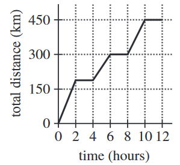

Juro traveled to 3 locations during a workday. Juro remained at each location a whole number of hours. The graph below shows the relationship between time, in hours, into his workday and total distance, in kilometers, traveled. Which of the following values is closest to Juro's average speed, in kilometers per hour, for the parts of the workday when he was traveling?
